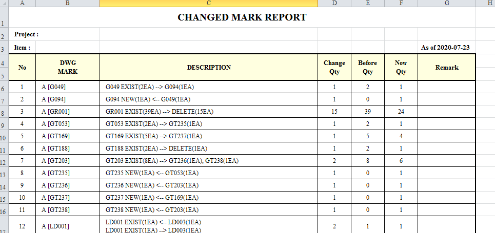

모델 비교 리스트 출력 프로그램
Tekla Program으로 작성된 이전 모델과 최종 모델을 비교하여 변경된 내용에 대한 내용을 작성하는 프로그램이다.

변경 리스트 작성
- 비교 검토한 내용 리스트 출력
- 엑셀로 자동 출력

변경된 내용 도면에 표기
- 비교 검토한 내용 리스트 출력
- 1. 테클라상에서 열려있는 2D도면상에서 해당된 내용을 자동으로 변경내용을 기록한다.
- 2. 테클라상에서 drawing list에서 선택된 도면에 대해서 자동으로 변경내용을 기록한다.
- 3. 변경된 내용에 대한 내용을 엑셀로 출력한다. 